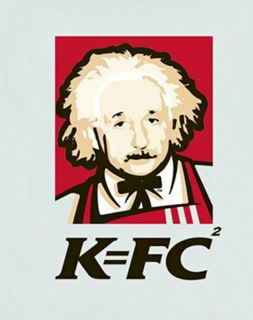

Smart Control

Estruturas
Header
Define o cabeçalho principal da página ou de uma seção. Geralmente agrupa a logo do sistema e o menu principal.
Main
Envolve o conteúdo principal e exclusivo de um documento. Só deve existir um elemento
Section
Agrupa conteúdos que fazem parte de um mesmo tema ou assunto dentro da página.
Details
É usada para criar um widget interativo que o usuário pode abrir e fechar. Por padrão, o widget está fechado. Quando aberto, ele se expande e exibe o conteúdo em seu interior.